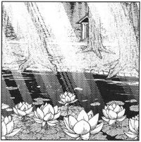

- Welcome to Touhou Wiki!
- Please register to edit. For assistance, check in with our Discord server or IRC channel.
Giant Toad's Pond
Giant Toad's Pond o̞ːɡ̃a̠ma̠ no̞ ike̞ | |
|---|---|
|
 The Giant Toad's Pond as illustrated in Perfect Memento in Strict Sense
| |
| Location |
Halfway up the Youkai Mountain |
| Residents |
|
Appearances | |
| Official Games | |
| |
| Print Works | |
The Giant Toad's Pond (大蝦蟇の池 Oo-gama no Ike) is a small, mysterious pond that can be found halfway up the Youkai Mountain.
General Information[edit]
It is rather difficult to get to this place due to being in the middle of the mountain. The pond's water is said to have divine properties necessary for Shinto rituals, and lotus flowers can be seen growing on its surface.[1] The lotus flowers in the pond are beautiful, and lotus leaves and flowers floating on the surface lit by sunbeams filtered through the surrounding foliage further emphasize the mysteriousness of the pond. There is a small shrine located near to the pond about which not much is known. It was built so long ago that no one knows who it was built by or for whom any more. Humans sometimes leave offerings here.[1] The offering left here immediately disappear, believed to be taken by the tengu.
The threat level of this place is 'medium', and it is home to the Giant Toad, the protector of the pond. It is said to violently attack those who desecrate the pond, but be otherwise passive. It is said that he protects those who leave it offerings, and that a sign of its protection is to be trailed by toads.[1] This is also the location where Cirno was eaten by the Giant Toad.
The Pond's Appearance[edit]
Games[edit]
- Phantasmagoria of Flower View
The pond appeared in Phantasmagoria of Flower View as a stage location associated with Aya Shameimaru. The stage generally appears on stage 7 in some of the scenarios of the game. Some characters end up here because they cannot find the source to the cause of the flower incident in the game, getting fed up of going to the same old locations, but may end up spotting Aya and fighting her here. In Eiki Shiki, Yamaxanadu's scenario, she'll come here to see if Aya has been keeping up with what she (supposed to have) learnt by the yama, to which she hasn't.
Spin-offs[edit]
- Shoot the Bullet
The pond appears on stage 3 of Shoot the Bullet, where Aya Shameimaru encounters Alice Margatroid and Keine Kamishirasawa to try and take photos of their danmaku. The previous stage is at the Misty Lake, whilst the next stage is at the Nameless Hill. There are 8 scenes in this stage.
Gallery[edit]

Giant Toad's Pond as seen in Phantasmagoria of Flower View

The pond in Shoot the Bullet